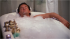
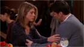
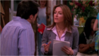

- s08e1- "The One After I Do"
Monica and Chandler's wedding reception is almost upstaged by the news that someone may be pregnant. Phoebe suspects its Rachel and comes up with a plan to cover for her friend.
- s08e2 - "The One With The Red Sweater"
Monica and Phoebe speculate about who might be the father of Rachel's baby. Mistakenly thinking Phoebe is the one who's pregnant, Joey makes a gallant gesture.
- s08e3 - "The One Where Rachel Tells..."
Everybody seems to know who the father of Rachel's baby is, except the guy himself: Ross. Phoebe and Joey fib about a gas leak to gain entry to Monica and Chandler's apartment.
- s08e4 - "The One With The Videotape"
Ross and Rachel's attempt to explain how they wound up getting pregnant turns into an argument over who came on to whom - until Ross makes the shocking announcement that he has the encounter on videotape.
- s08e5 - "The One With Rachel's Date"
Ross is horrified to learn that the pregnant Rachel is headed out on a date with a handsome actor, while Phoebe protests when Monica wants to fire a cute but clumsy sous-chef whom she fancies.
- s08e6 - "The One With The Halloween Party"
At Monica's Halloween party, Phoebe meets her twin sister Ursula's fiance and finds herself attracted to him as well.
- s08e7 - "The One With The Stain"
Ross learns Rachel wants to move out and find her own place... and suggests a vacancy in his building. But Joey gives Ross tough competition when he puts a nursery in their apartment to make her stay.
- s08e8 - "The One With The Stripper"
Feeling guilty for denying Chandler a reach bachelor party, Monica arranges for a stripper to perform for him, but Chandler's in for a big surprise.
- s08e9 - "The One With The Rumor"
Monica bumps into an old high school friend and invites him to Thanksgiving dinner with the gang - unaware that he isn't exactly fond of Rachel.
- s08e10 - "The One With Monica's Boots"
Chandler is peeved when Monica splurges on an expensive pair of boots. When Phoebe learns Ross's and Sting's children attend the same school, she angles to meet the celebrity and get concert tickets.
- s08e11 - "The One With Ross's Step Forward"
Ross becomes nervous when Mona wants to mail a joint Christmas card with the couple's picture. As the hormonal effects of her pregnancy kick in, Rachel searches for possible romantic partners - such as Joey.
- s08e12 - "The One Where Joey Dates Rachel"
To prepare Joey for a big date, Rachel goes out with him for a night on the town. But things take an unexpected turn: the date is a success and Joey becomes intensely attracted to Rachel.
- s08e13 - "The One Where Chandler Takes A Bath" 
Joey is crazy with guilt over his newfound affection for Rachel - and things get screwier when Monica mistakenly thinks he's infatuated with Phoebe.
- s08e14 - "The One With The Secret Closet"
Chandler becomes obsessed with finding out what is behind the locked door of Monica's forbidden closet. Phoebe feels betrayed when she discovers Monica has been using another massage therapist.
- s08e15 - "The One With The Birthing Video"
Monica goes all out for Valentine's Day with sexy lingerie and X-rated entertainment. But Chandler is too shell-shocked to respond after he accidentally watches a birthing video meant for Rachel.
- s08e16 - "The One Where Joey Tells Rachel" 
Joey tells Ross about his true feelings for Rachel. They agree that Joey should tell Rachel during dinner, regardless of the consequences. Chandler fears that Phoebe's new boyfriend.
- s08e17 - "The One With The Tea Leaves"
Phoebe determine through reading tea leaves that she'll soon meet the man of her dreams. Feeling awkward after revealing his true feelings for Rachel, Joey keeps a low profile.
- s08e18 - "The One In Massapequa"
Monica regrets her request to supplant Ross as the designated toast-giver at their parents' 35th wedding anniversary. Phoebe's latest boyfriend drives everyone at the party crazy with his upbeat optimism.
- s08e19 - "The One With Joey's Interview" 
Joey is thrilled when his name is used in a Soap Opera Digest crossword. But he's reluctant for them to do a profile of him because his last interview got him into so much trouble he was written out of the show.
- s08e20 - "The One With The Baby Shower"
Rachel panics that she is unprepared to care for a newborn and reluctantly goes along with her mother's plans to move in and help out - which hardly makes roommate Ross jump for joy.
- s08e21 - "The One With The Cooking Class"
Monica's restaurant is hit with a bad review, and she drags Joey along to a class taught by the critic in the hope of changing his mind. While shopping for baby gear, Rachel is put out when a salesgirl flirts with Ross.
- s08e22 - "The One Where Rachel Is Late"
An overdue Rachel will try anything to get the baby moving. Joey is ticked off when Chandler nods off during he screening of his new movie.
- s08e23 - "The One Where Rachel Has A Baby, Part 1"
Rachel's baby nears delivery with an anxious Ross nearby. While she's in endless labor hell, her waiting friends cause hospital havoc. Chandler and Monica search for privacy in a quest to have their own baby.
- s08e24 - "The One Where Rachel Has A Baby, Part 2"
Rachel has her baby and names her Emma. Joey finds Ross's ring and Rachel thinks Joey is proposing to her!